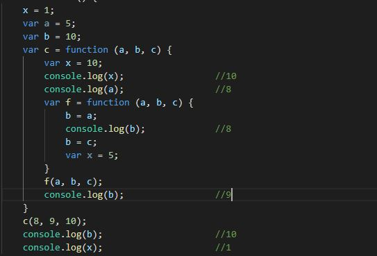
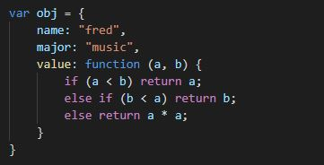
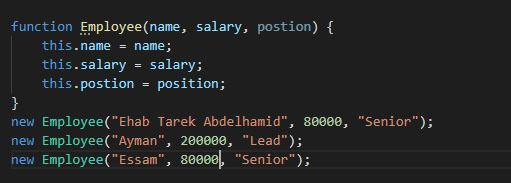

-
Determine what this Javascript code will print out (without running it):

- What is the difference between a method and function?
Method is a chunk of code that is called by name and associated with an
object while function is a chunk of code that is called by name and can pass
argument to operate on as well as
return the argument back.
- What does 'this' refer to when used in a Java method?
In a Java method, 'this' refer to current object itself.
- What does 'this' refer to when used in a JavaScript method?
In a JavaScript method, 'this' refer to an enclosed object for that method.
- What does 'this' refer to when used in a JavaScript constructor function?
In a JavaScript constructor function, 'this' refer to the window object which is
the global object.
- Assume object x is the prototype for object y in Javascript. Object x has a method f( ) containing
keyword 'this' .When f is called by x.f( ), what does 'this' refer to?
'this' refers to the object 'x'.
- What is a free variable in JavaScript?
Free variable in JavaScript is a variable that is not declaired in the function or
a variable that is not a parameter (coming from outside the function).
- Create an object that has properties with name = "fred" and
major="music" and a property that is a function that takes 2 numbers
and returns the smallest of the two, or the square of the two if they
are equal.

- Write Javascript code for creating three Employee objects using the
"new" keyword and a constructor function. Employee objects have
the following fields: name, salary, position
